LiNotes
LiNotesAide
Chaque fonction, pas à pas. Ubuntu et Android indiquent où les choses diffèrent.
Avec ou sans serveur
Au premier lancement, LiNotes demande l’adresse de votre serveur. Vous l’obtenez auprès de la personne qui exploite le serveur – ou vous en installez un vous-même.
Pas de serveur ? Touchez « Utiliser sans serveur ». LiNotes est alors une app de notes où tout est stocké chiffré uniquement sur cet appareil. Plus tard, vous pourrez ajouter un serveur sous Réglages → « Se connecter à un serveur … » Ubuntu menu du compte – vos notes seront alors envoyées.

Compte et fichier de clé
- Créer un compteSaisissez l’adresse du serveur, choisissez « Créer un nouveau compte », puis le code d’invitation, un nom d’utilisateur (en minuscules, sans espaces) et votre nom. Il n’y a pas de mot de passe – votre compte est protégé par une clé qui ne se trouve que sur vos appareils.
- Sauvegarder le fichier de cléRéglages → « Sauvegarder le fichier de clé … » Ubuntu menu du compte. Choisissez une phrase secrète et conservez le fichier, p. ex. sur une clé USB. Si vous perdez tous vos appareils, c’est le seul moyen de retrouver vos notes – personne d’autre ne peut les restaurer. LiNotes vous le rappelle au bout de quelques jours.
Connecter un autre appareil
- Sur le nouvel appareilSaisissez l’adresse du serveur et choisissez « Se connecter avec un autre appareil », puis votre nom d’utilisateur.
- Confirmer le codeLe nouvel appareil affiche un code à 6 chiffres et un QR code. Sur un appareil où vous êtes déjà connecté apparaît « Connecter un nouvel appareil ? » – saisissez-y ou scannez le code. Si ce n’était pas vous : « Refuser ».
Nouvelle note
Android Icône crayon en haut à droite ou en bas de la note. Ubuntu Icône crayon dans la barre ou Ctrl+N.
Note rapide depuis n’importe où : Android Ajoutez la tuile « Nouvelle note » dans les Réglages rapides (balayer depuis le haut). Ubuntu linotes --neue-notiz ouvre immédiatement une nouvelle note – p. ex. comme raccourci clavier personnalisé dans les paramètres d’Ubuntu.
La première ligne devient automatiquement le titre. Une nouvelle note dans laquelle vous n’écrivez rien disparaît d’elle-même quand vous la quittez – comme chez Apple.
Mise en forme
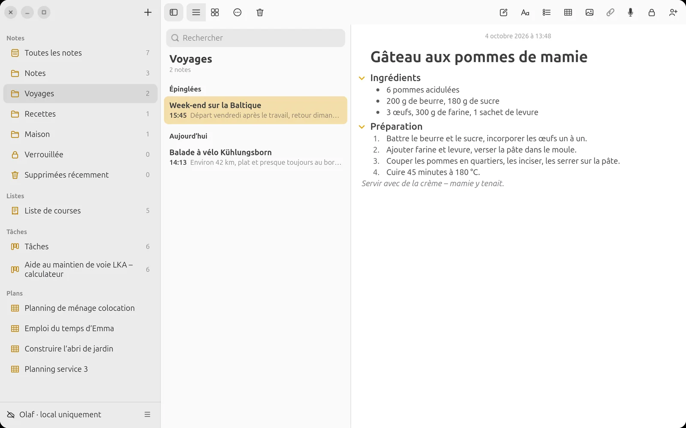
Avec « Aa », vous choisissez Titre, En-tête, Sous-en-tête, Corps, Chasse fixe, Liste à puces, Liste à tirets, Liste numérotée et Citation. Gras, italique, souligné et barré se trouvent dans le même menu.
Retrait : Tab / Maj+Tab Ubuntu ou via « Aa » Android. Un séparateur apparaît quand vous tapez --- sur une ligne vide puis Entrée.
Listes de contrôle
Icône liste de contrôle dans la barre, puis écrivez simplement les éléments. Touchez le cercle pour cocher un élément. Une ligne vide termine la liste. Via « Plus », les éléments cochés peuvent être déplacés automatiquement en bas.
Surlignage, couleur du texte, police, alignement
Sélectionnez du texte et surlignez-le via « Aa » – en jaune, orange, rose, violet, menthe ou bleu. Dans le même menu : couleur du texte, police et alignement (gauche, centré, droite). Ubuntu Le surlignage jaune fonctionne aussi avec Ctrl+Alt+H.
Tableaux de données
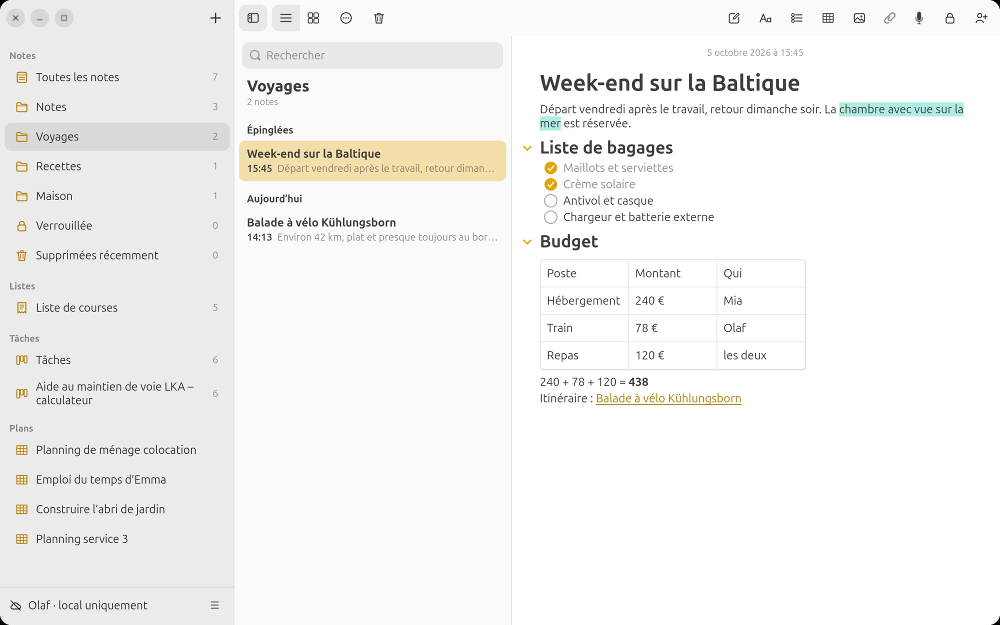
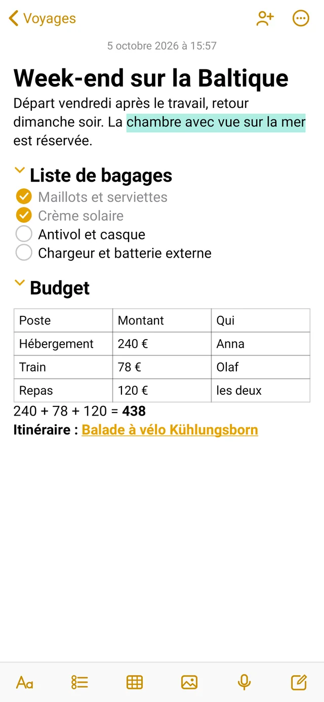
Insérer : icône tableau dans la barre – vous obtenez un tableau de 3 × 3 cellules.
Ubuntu Écrivez directement dans les cellules. Tab passe à la cellule suivante ; dans la dernière, une nouvelle ligne apparaît. Entrée et les flèches changent de ligne. Clic droit sur une cellule : insérer une ligne au-dessus/en dessous, une colonne à gauche/à droite, supprimer une ligne ou une colonne, supprimer le tableau.
Android Le tableau s’ouvre dans l’éditeur de tableaux. « Suivant » sur le clavier passe à la cellule suivante. En bas, vous insérez ou supprimez des lignes et des colonnes à côté de la cellule choisie. Touchez le tableau dans la note pour le modifier à nouveau.
Calculer
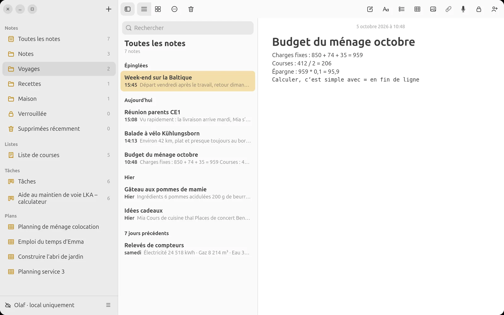
Écrivez un calcul suivi d’un = en fin de ligne – LiNotes ajoute le résultat. La multiplication passe avant l’addition, les parenthèses fonctionnent, les décimales s’écrivent avec une virgule. Un libellé devant ne gêne pas : Fixkosten : 850 + 74 + 35 = donne 959.
Photos, fichiers, PDF
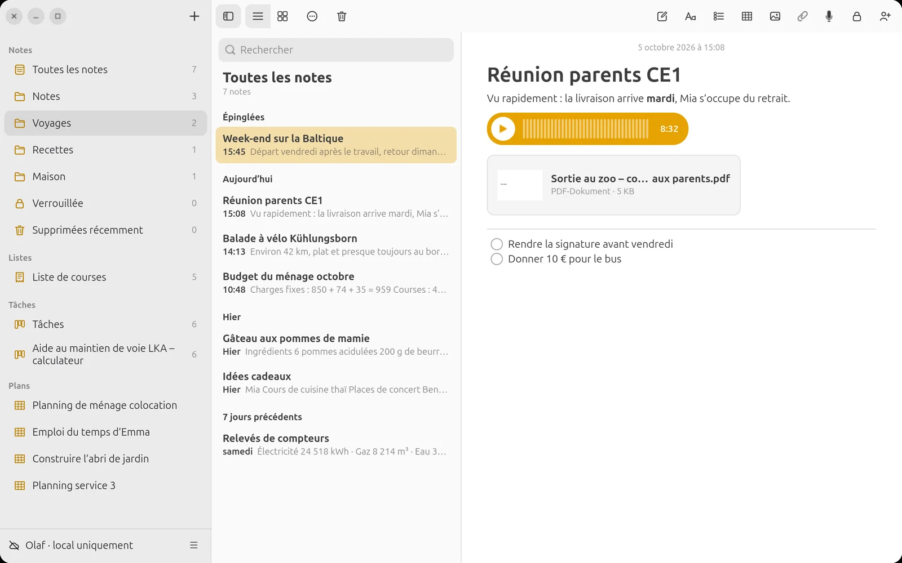
Android Icône photo → « Prendre une photo », « Choisir dans les photos » ou « Joindre un fichier … ». Ubuntu Icône photo ou trombone – ou glissez simplement des fichiers dans la note.
Les pièces jointes sont chiffrées comme tout le reste. Les PDF affichent un aperçu de la première page ; toucher ouvre le fichier avec l’app adaptée.
Enregistrer de l’audio
Touchez l’icône micro dans la barre – l’enregistrement démarre aussitôt, le temps défile. « OK » le place dans la note, « Annuler » l’abandonne. La première fois, Android demande l’autorisation du micro.
L’enregistrement apparaît comme un message vocal dans Messages d’Apple : bulle colorée avec bouton de lecture, forme d’onde et durée. Toucher le lit directement dans la note, toucher à nouveau le met en pause. Toucher la forme d’onde saute à cet endroit ; le temps est décompté. Les enregistrements du téléphone se lisent sur l’ordinateur et inversement.
Toucher ou cliquer une image dans la note l’ouvre en grand dans l’aperçu rapide.
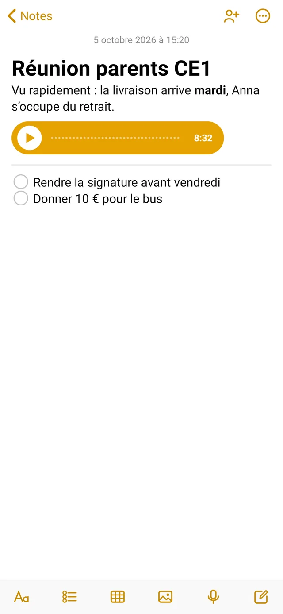
Replier les sections
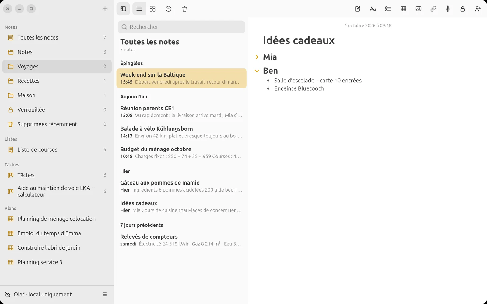
Les en-têtes et sous-en-têtes suivis de contenu ont une flèche à gauche. La toucher replie tout jusqu’au prochain en-tête de même niveau. L’état est enregistré avec la note et vaut sur tous les appareils. Le PDF montre toujours tout.
Lier des notes
Tapez >> – une sélection de vos notes apparaît ; continuez à taper pour filtrer. Ubuntu Aussi avec Ctrl+K. Le lien affiche toujours le titre actuel – même si vous renommez la note liée. Toucher l’ouvre.
Les adresses web dans les notes sont automatiquement cliquables.
Modèles
Ubuntu « + » au-dessus de la barre latérale → « Nouvelle note à partir d’un modèle … ». Android Dans un dossier « … » → « Nouvelle note à partir d’un modèle … ». Fournis : réunion, procès-verbal, liste de voyage et journal.
Votre propre modèle : créez une note puis Ubuntu clic droit ou Android appui long → « Utiliser comme modèle ». Les espaces réservés sont remplacés à la création : {{Datum}} (date), {{Uhrzeit}} (heure), {{Wochentag}} (jour de la semaine) – « Réunion {{Datum}} » devient p. ex. « Réunion 04.10.2026 ».
Aperçu des liens
Si une adresse web est seule sur une ligne, elle devient après Entrée un aperçu avec titre, image et domaine – comme chez Apple. Par défaut, c’est désactivé : Ubuntu menu d’affichage (⋯) → « Aperçu des liens (charger la page web) », Android Réglages → « Aperçu des liens ».
Confidentialité comme avec Signal : seul l’appareil sur lequel vous collez le lien charge la page – l’exploitant du site voit l’adresse de votre connexion, rien d’autre. L’aperçu et son image sont stockés chiffrés dans la note ; les autres appareils ne chargent rien. Les notes verrouillées n’ont pas d’aperçu.
Cliquer sur l’aperçu ouvre la page. Ubuntu Clic droit → « Afficher seulement l’adresse ». Android toucher → « Ouvrir dans le navigateur » ou « Afficher seulement l’adresse ».
Fonctions avancées
Par défaut, LiNotes ne montre que ce dont on a besoin au quotidien. Pour plus, activez les Fonctions avancées : Ubuntu menu d’affichage (⋯) → « Fonctions avancées », Android Réglages → « Fonctions avancées ». Le réglage vaut pour votre compte sur tous les appareils.
Code avec coloration syntaxique : dans le menu de format, « Code » et le langage (Python, Kotlin, Shell, JSON) – mots-clés, chaînes, commentaires et nombres sont colorés, aussi dans le PDF. Un paragraphe de code vide suivi d’Entrée termine le bloc. Les notes avec du code sont toujours affichées en couleur, même quand les fonctions avancées sont désactivées.
Notes et sources : dans le menu de format, « Note / source … » – un numéro en exposant apparaît au curseur, le texte figure en bas dans la liste « Notes et sources » (c’est ainsi que naît une bibliographie) et à la fin du PDF. Les numéros se suivent d’eux-mêmes. Cliquez ou touchez un numéro pour modifier le texte ou supprimer la note.
Formules (LaTeX) : dans le menu de format, « Formule (LaTeX) … » – des formules en notation LaTeX, p. ex. \frac{a}{b}, x^2, \sqrt{x}, \alpha, \sum_{i=1}^{n}, \int_0^1, des matrices (\begin{pmatrix} … \end{pmatrix}) et des disjonctions de cas (cases). LiNotes les compose lui-même – sans Internet, dans la note et dans le PDF. Cliquez ou touchez une formule pour la modifier ; ce que LiNotes ne connaît pas est marqué en rouge. Les anciennes versions de LiNotes affichent le texte LaTeX.
@-mentions
Dans les notes partagées, tapez @ en début de mot – les personnes avec qui la note est partagée apparaissent. La personne mentionnée reçoit une notification « … vous a mentionné » ; la toucher ouvre la note.
Voir les modifications des autres
Si quelqu’un a modifié une note partagée depuis votre dernière consultation, un point apparaît devant le titre dans la liste. Dans la note, une ligne indique qui l’a modifiée et quand, et les lignes modifiées sont surlignées en couleur. Si quelqu’un modifie la note pendant que vous l’avez ouverte, le marquage apparaît aussitôt.
Dossiers, tri, galerie, épingler
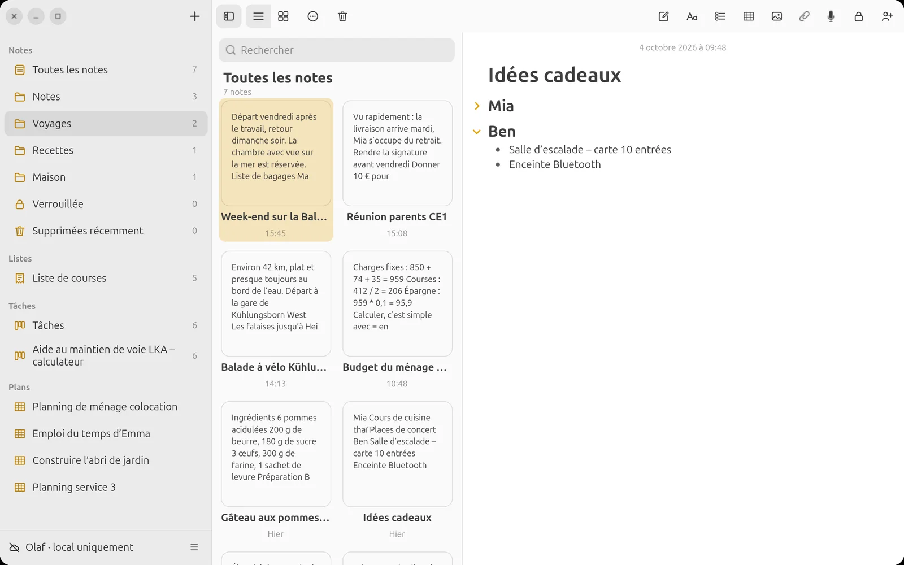
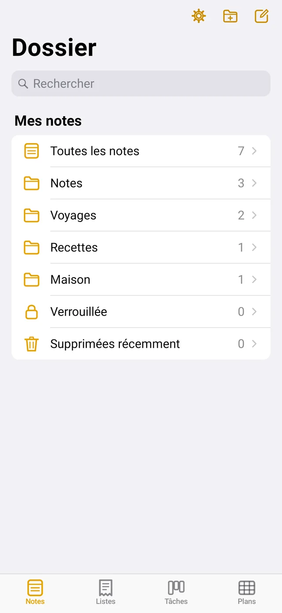
- Dossiers et sous-dossiers : Android icône dossier en haut à droite. Ubuntu « + » au-dessus de la barre latérale. Les dossiers s’imbriquent à volonté.
- Déplacer : faites glisser notes, listes, tableaux et plans sur un dossier – Android maintenir puis glisser, Ubuntu avec la souris. Ou appui long / clic droit → « Déplacer vers … ».
- Trier : menu « … » → date de modification, date de création ou titre. Vaut sur tous les appareils.
- Galerie : menu « … » → « Afficher en galerie » Ubuntu ou Ctrl+2.
- Épingler : appui long / clic droit sur une note → « Épingler ». Les notes épinglées restent en haut.
Recherche et tags
Le champ de recherche au-dessus de la liste parcourt toutes les notes. Écrivez #mot dans une note – le tag apparaît dans la vue d’ensemble pour filtrer.
Notes verrouillées
Dans la note, « Plus » → « Verrouiller la note » Ubuntu icône cadenas. La première fois, vous définissez un mot de passe pour les notes. Le titre reste visible, le contenu est chiffré une seconde fois. Sur le téléphone, vous pouvez activer le déverrouillage par empreinte, code PIN ou schéma (Réglages → Notes verrouillées).
Les notes déverrouillées se verrouillent à nouveau après quelques minutes d’inactivité et quand vous quittez l’app. Immédiatement : icône cadenas dans la note ou « Verrouiller maintenant les notes déverrouillées ». Les notes partagées ne peuvent pas être verrouillées.
PDF et impression
Android Dans la note, « Plus » → « Envoyer en PDF … » ou « Imprimer … ». Ubuntu Clic droit sur la note → « Exporter en PDF … » (Ctrl+Maj+E) ou « Imprimer … » (Ctrl+P). Le PDF ressemble à la note – avec en-têtes, listes, tableaux et photos.
Supprimées récemment
Les notes supprimées restent 30 jours dans « Supprimées récemment » et peuvent y être restaurées.
Listes
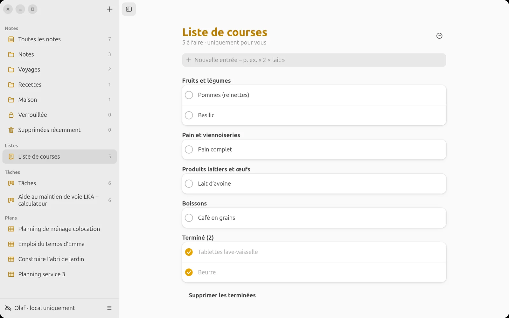
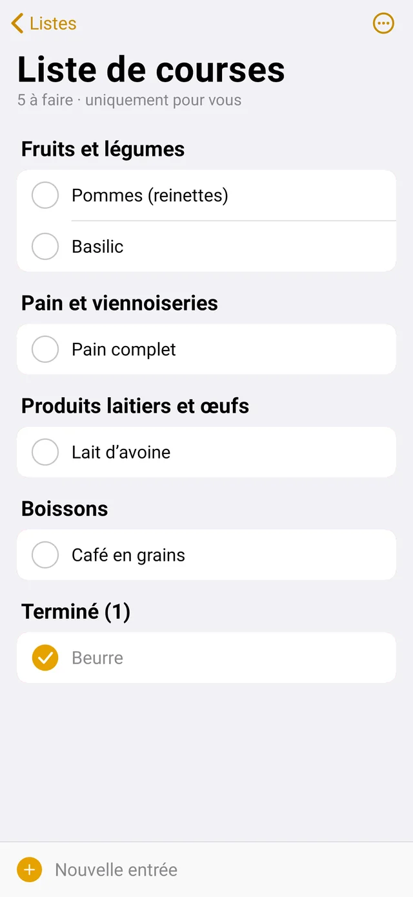
Saisissez les éléments en bas – ils se rangent automatiquement dans le bon rayon. Coller plusieurs lignes crée plusieurs éléments. On coche avec le cercle ; « Supprimer les terminées » fait le ménage. Un compteur sur l’onglet « Listes » montre ce que d’autres ont ajouté.
Tableaux de tâches
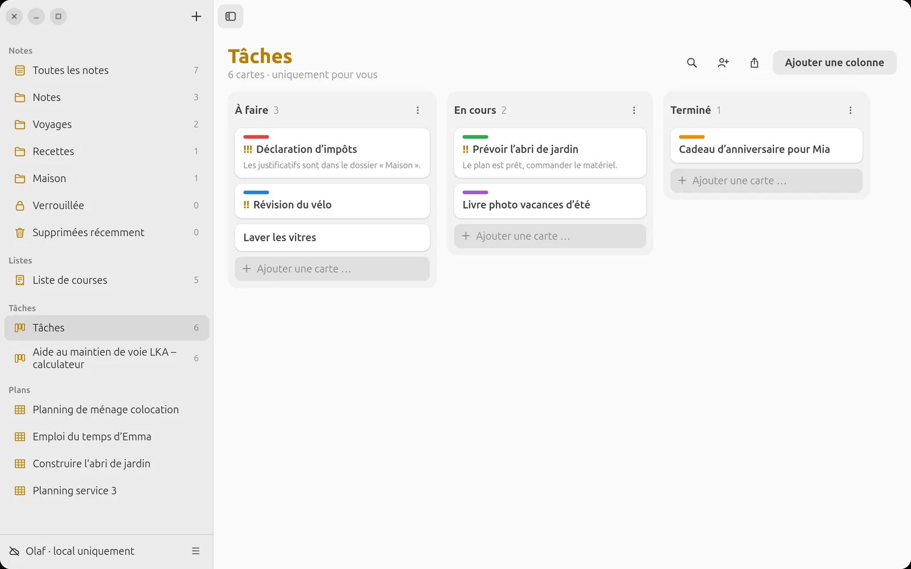
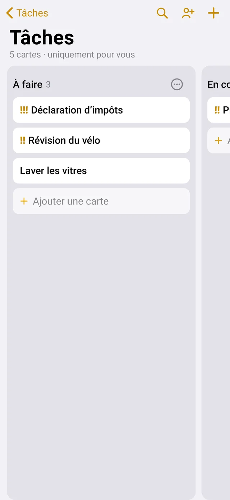
Nouvelle carte avec « Ajouter une carte … » sous une colonne. Touchez une carte pour l’échéance, le responsable, la priorité, la couleur et les notes. Ubuntu Faites glisser les cartes avec la souris dans une autre colonne. Android Appui long sur une carte → choisir une colonne. Les colonnes peuvent être renommées, ajoutées et supprimées.
Rapport : Android appui long sur le tableau → « Partager le rapport (PDF) ». Ubuntu Icône d’export (boîte avec flèche) en haut du tableau ou clic droit → « Exporter le rapport … » (PDF ou CSV). Inviter des personnes : l’icône Personnes à côté.
Projets de développement
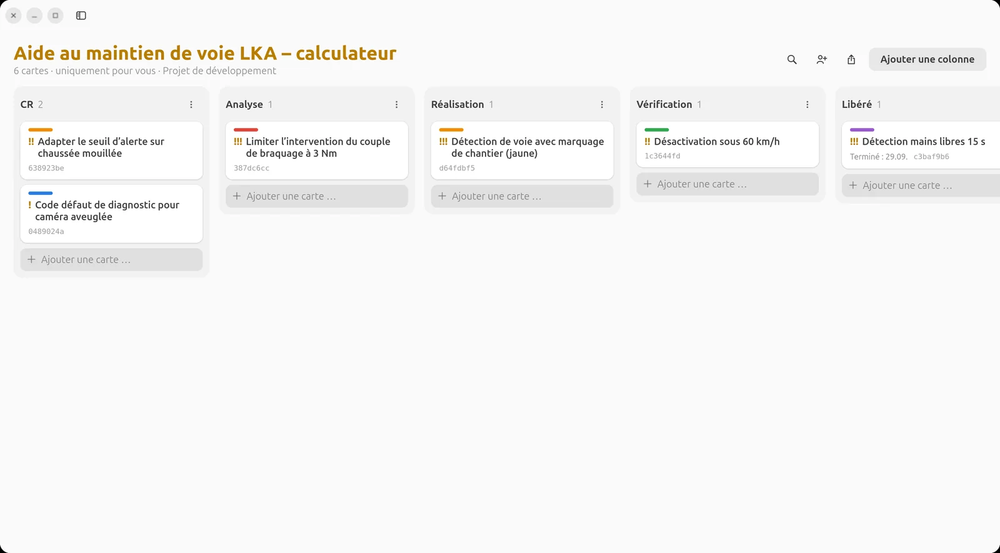
Appui long / clic droit sur le tableau → « Gérer comme projet de développement ». Les cartes affichent alors leur ID court à citer dans les commits et rapports, et la fenêtre de la carte propose en plus :
- Analyse d’impact – ce qui est concerné, quels risques, ce qu’il faut vérifier en plus.
- Vérification – tests et contrôles, avec des justificatifs sous forme de fichiers : procès-verbaux de test, captures d’écran, données de mesure. Ils sont stockés chiffrés sur la carte, avec horodatage, personne et somme de contrôle (SHA-256) – on peut ainsi prouver plus tard qu’il s’agissait exactement de ce procès-verbal.
- Réalisé dans la version et les commits liés (automatiquement si l’ID de la carte figure dans le message de commit).
- Historique – qui a déplacé la carte dans quelle colonne, et quand.
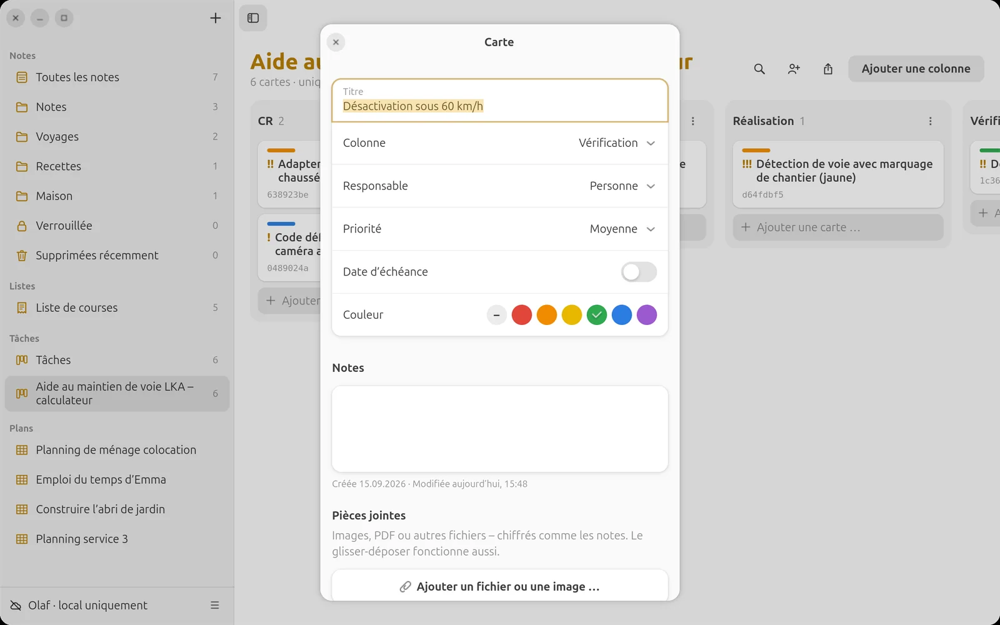
Le rapport contient alors une matrice de traçabilité (carte ↔ commits ↔ vérification ↔ version ↔ validation) et une page de détail par carte – avec tous les justificatifs et leurs sommes de contrôle, images intégrées directement.
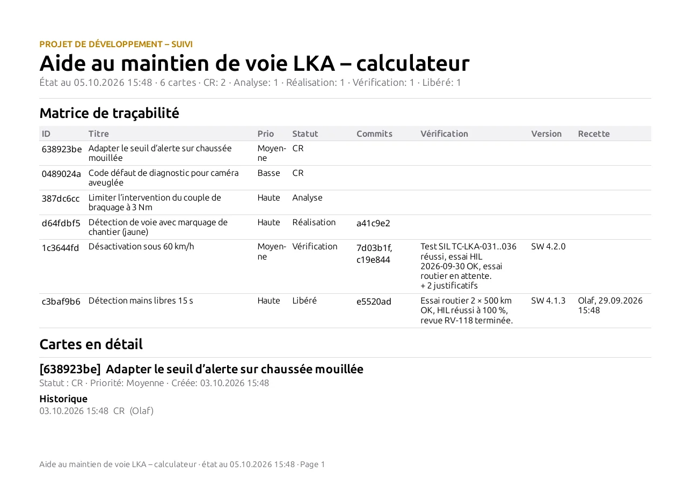
Les images montrent un exemple fictif : le projet automobile « Spurhalteassistent LKA – Steuergerät » (calculateur d’aide au maintien de voie) avec les colonnes CR, Analyse, Réalisation, Vérification et Libéré.
Exemples détaillés : projet ASIL D selon l’ISO 26262 et Automotive SPICE · Développer un logiciel avec l’IA.
Plans
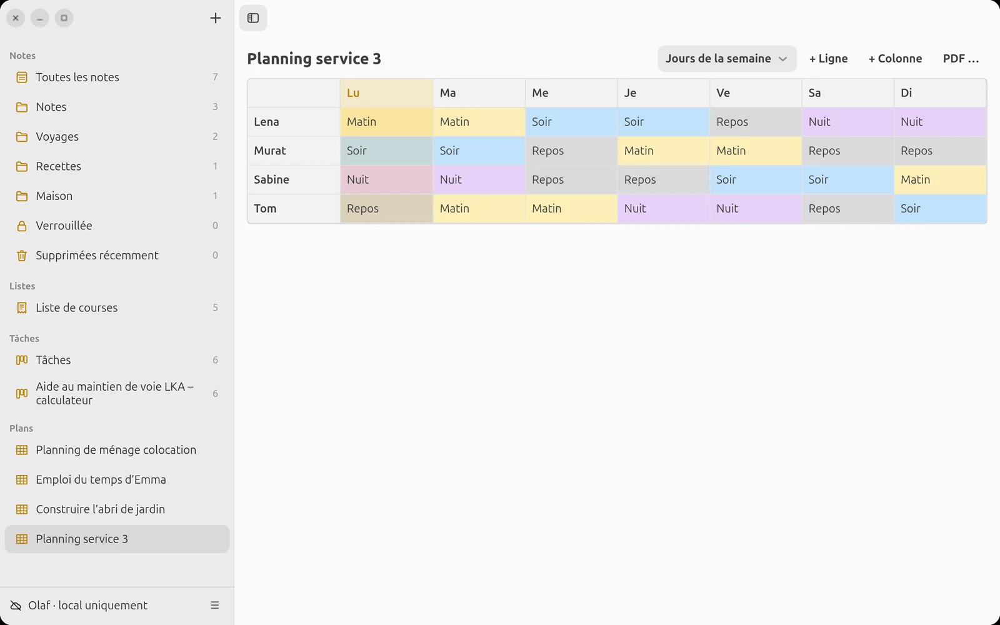
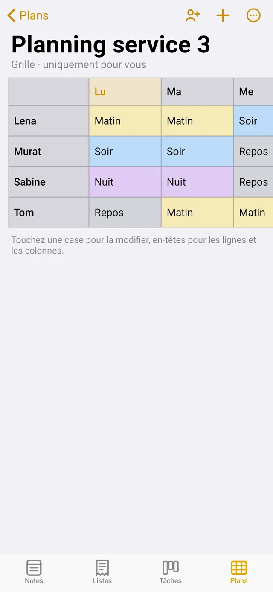
Nouveau plan : Android onglet « Plans » → « + ». Ubuntu « + » au-dessus de la barre latérale → « Nouveau plan … ». Choisissez un modèle : plan vide, emploi du temps, planning d’équipes, planning de ménage, planning de bloc/salles ou plan de projet.
Modifier la grille : Ubuntu Écrivez directement dans les cellules, clic droit pour la couleur, les lignes et les colonnes. Android Touchez une cellule pour le texte et la couleur ; touchez les en-têtes de ligne et de colonne pour renommer, insérer et supprimer.
Type de colonnes (menu « … » ou sélection en haut) : colonnes libres, jours de la semaine, jours à partir d’une date ou semaines calendaires à partir de cette semaine. La colonne du jour est mise en évidence.
PDF : « PDF … » Ubuntu ou « … » → « Partager en PDF … » Android – au format paysage, pour l’afficher.
Rotation
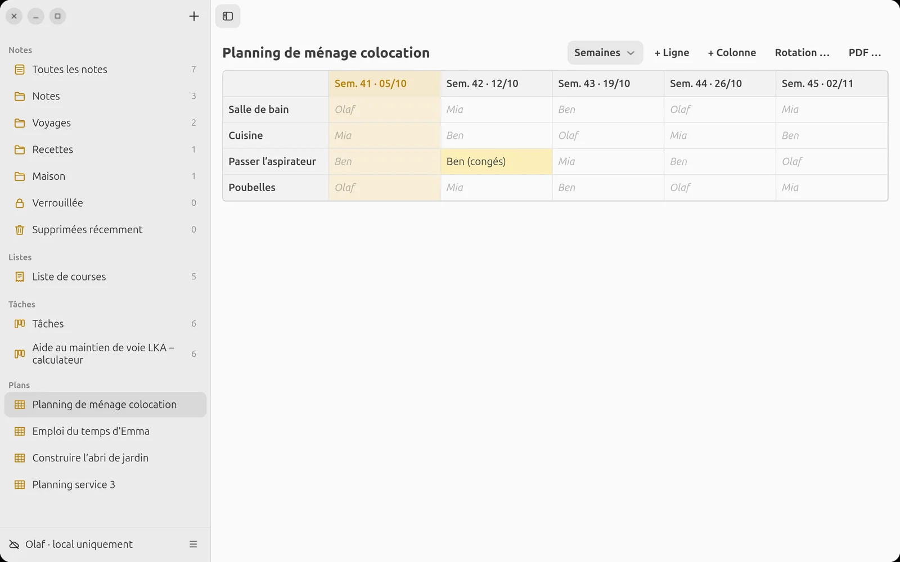
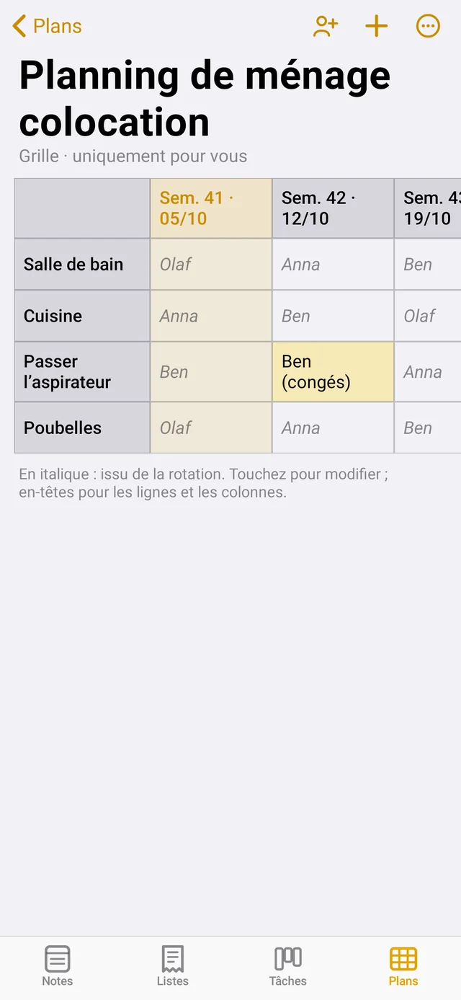
Pour les plannings de ménage et de service avec colonnes « Semaines » : choisissez « Rotation … » et saisissez les noms séparés par des virgules. Chaque semaine, chaque nom avance d’une ligne. Les noms issus de la rotation sont en italique. Une saisie personnelle dans une cellule (p. ex. « Ben (congés) ») ne vaut qu’à cet endroit.
Frise chronologique (plan de projet)
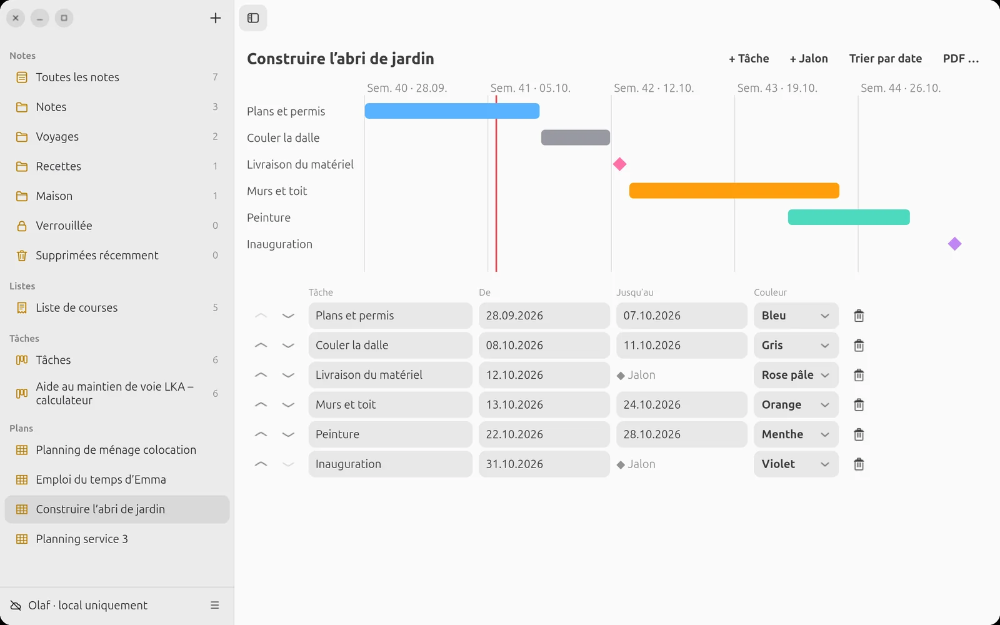
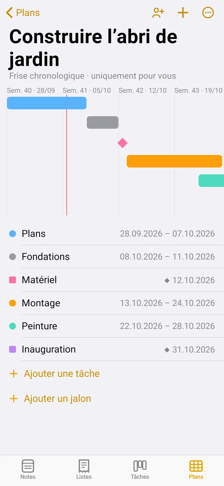
Les tâches apparaissent sous forme de barres, les jalons sous forme de losanges, la ligne rouge est aujourd’hui. Ubuntu « + Tâche » et « + Jalon » en haut ; nom, début, fin et couleur se modifient dans la liste en dessous. Android « + » en haut à droite ou « Ajouter une tâche » sous la liste ; touchez une tâche pour la modifier ou la supprimer. Dates au format JJ.MM.AAAA.
Travail agile
Les tableaux de LiNotes se prêtent au travail agile. La base en est le Manifeste pour le développement Agile de logiciels (2001) – ici dans son intégralité :
Manifeste pour le développement Agile de logiciels
Nous découvrons comment mieux développer des logiciels par la pratique et en aidant les autres à le faire. Ces expériences nous ont amenés à valoriser :
Les individus et leurs interactions plus que les processus et les outils
Des logiciels opérationnels plus qu’une documentation exhaustive
La collaboration avec les clients plus que la négociation contractuelle
L’adaptation au changement plus que le suivi d’un planNous reconnaissons la valeur des seconds éléments, mais privilégions les premiers.
Kent Beck, Mike Beedle, Arie van Bennekum, Alistair Cockburn, Ward Cunningham, Martin Fowler, James Grenning, Jim Highsmith, Andrew Hunt, Ron Jeffries, Jon Kern, Brian Marick, Robert C. Martin, Steve Mellor, Ken Schwaber, Jeff Sutherland, Dave Thomas
© 2001, the above authors
this declaration may be freely copied in any form,
but only in its entirety through this notice.
Source : agilemanifesto.org/iso/fr/manifesto.html
Les douze principes – en bref
- Livrer tôt et régulièrement quelque chose d’utile – c’est ce qui satisfait le mieux les clients.
- Les changements d’exigences sont bienvenus, même tardifs.
- Livrer des résultats opérationnels à intervalles courts, plutôt en semaines qu’en mois.
- Experts métier et développeurs travaillent ensemble au quotidien.
- Bâtir les projets autour de personnes motivées, leur donner l’environnement, le soutien et la confiance.
- Le dialogue en face à face est le meilleur moyen d’informer.
- L’avancement se mesure à ce qui fonctionne.
- Garder un rythme que chacun peut tenir durablement.
- L’excellence technique et une bonne conception rendent agile.
- La simplicité : maximiser la quantité de travail qu’on n’a pas à faire.
- Les bonnes solutions émergent d’équipes auto-organisées.
- S’arrêter régulièrement, s’améliorer ensemble et ajuster sa façon de faire.
Résumé avec nos propres mots ; texte original : agilemanifesto.org/iso/fr/principles.html
Travailler en agile avec LiNotes
Un tableau montre le flux de travail en un coup d’œil : des colonnes comme « À faire – En cours – Terminé », chaque carte un petit morceau de travail autonome. Voici comment les quatre valeurs s’y intègrent :
- Les individus et leurs interactions : partager des tableaux, attribuer des cartes et inviter à la discussion avec des @-mentions – LiNotes soutient la discussion, sans la remplacer.
- Des logiciels opérationnels : découper les cartes petites et ne les déplacer dans « Terminé » que quand cela fonctionne vraiment ; dans les projets de développement, les justificatifs le prouvent.
- La collaboration avec les clients : invitez le donneur d’ordre au tableau : il écrit ses souhaits sous forme de cartes et les valide lui-même – p. ex. avec la règle que lui seul déplace dans « Terminé ».
- L’adaptation au changement : changer les priorités et réordonner les cartes à tout moment ; les plans montrent ouvertement les jalons décalés au lieu de les cacher.
Prendre du recul régulièrement : générer le rapport en PDF et le parcourir ensemble – qu’est-ce qui a bien marché, que changeons-nous ? De la documentation seulement autant que nécessaire : analyse d’impact, vérification et justificatifs sont destinés aux projets qui en ont besoin (p. ex. selon l’ISO 26262 ou Automotive SPICE) – les tableaux simples restent légers.
Vérifier des personnes
Avant de partager quoi que ce soit, vous vous vérifiez une fois : Réglages → « Personnes » → toucher la personne Ubuntu menu du compte → Personnes → « Vérifier ». Votre appareil affiche un code ; une demande apparaît sur l’appareil de l’autre personne – saisissez-y le code ou scannez le QR code. Ainsi personne, pas même le serveur, ne peut vous glisser une fausse clé.
Partager
Appui long / clic droit sur une note, un dossier, une liste, un tableau ou un plan → « Partager … » et choisissez des personnes. Un dossier partagé partage tout son contenu. Si vous retirez quelqu’un, tout est automatiquement rechiffré. Les éléments partagés se reconnaissent à l’icône Personnes.
Espace sur le téléphone
Réglages → « Garder les notes » définit combien de temps le contenu d’une note reste sur le téléphone après sa dernière utilisation (toujours, 90, 30, 7 jours ou seulement sur le serveur). Par note : « Plus » → « Garder sur l’appareil ». Ensuite, la note est chargée chiffrée à l’ouverture. Les notes épinglées, les listes et les tableaux restent toujours sur l’appareil.
Ce que sait le serveur
Tout – notes, listes, tableaux, plans, noms de dossiers, images et enregistrements – est chiffré sur votre appareil avant d’atteindre le serveur. Le serveur voit seulement qu’il existe des éléments, leur taille et leur date de modification – pas leur contenu. Les apps ne contiennent ni publicité ni traqueurs.
Taille du texte, justification, césure
Android Réglages → Apparence : taille du texte, justification et césure (selon la langue du téléphone). Titres et en-têtes restent alignés à gauche.
Ubuntu Menu « … » à côté de liste/galerie : taille du texte (ou Ctrl++ / Ctrl+− / Ctrl+0) et justification. Il n’y a pas de césure sous Ubuntu.
Tout s’applique par appareil – grand et justifié sur le téléphone, compact sur l’ordinateur portable.
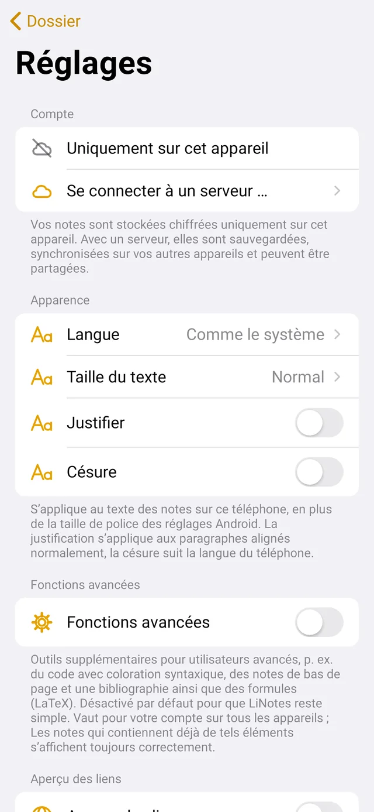
Note dans une fenêtre séparée Ubuntu
Double-clic sur une note dans la liste, clic droit → « Ouvrir dans sa propre fenêtre » ou Ctrl+O. Les modifications se synchronisent aussitôt dans les deux sens. Ctrl+W ferme la fenêtre de la note.
Raccourcis clavier Ubuntu
Tous les raccourcis avec champ de recherche : Ctrl+? ou F1. Les principaux :
- Ctrl+N nouvelle note · Ctrl+F rechercher · Ctrl+D dupliquer
- Ctrl+B / I / U gras, italique, souligné · Ctrl+Alt+H surligner
- Ctrl+Maj+T / H / J titre, en-tête, sous-en-tête
- Ctrl+Maj+L liste de contrôle · Ctrl+Maj+U cocher
- Ctrl+Alt+↑ / ↓ déplacer la ligne · Ctrl+K lier à une note
- Ctrl+Maj+D séparateur · Ctrl+P imprimer · Ctrl+Alt+L verrouiller les notes verrouillées
D’autres questions ? Vers l’accueil · Votre propre serveur